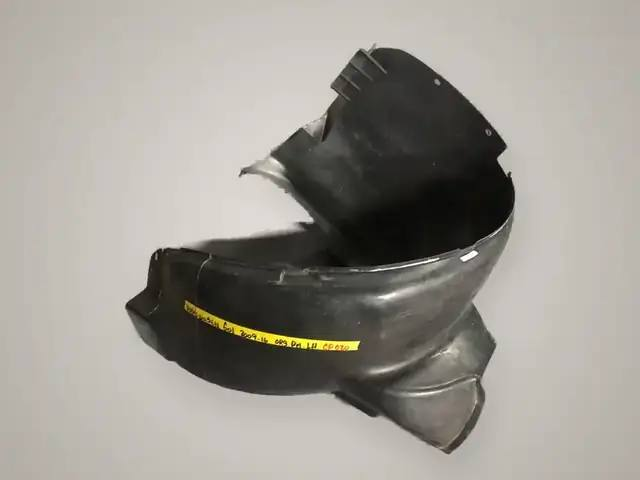
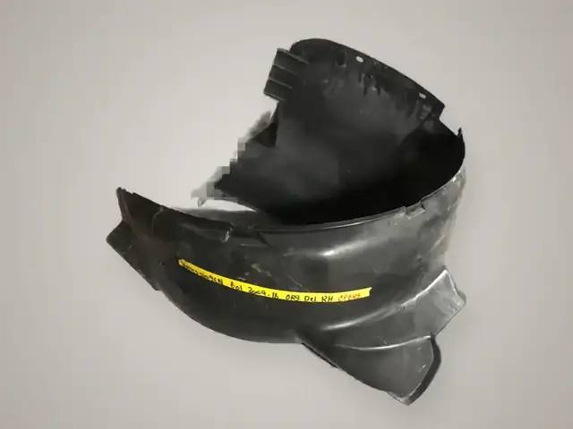

Piezas de carrocería para Volkswagen Gol
7 piezas disponibles hoy para Volkswagen Gol, cada una con su foto y su código: faros y lámparas delanteras (2), cubrepolvos (2), puertas (1), marcos de radiador (1). Dinos el año de tu carro y te confirmamos si le sirve.
- Garantía de 3 días
- Foto real de cada pieza
- Efectivo, Yappy o ACH
- Lunes a sábado, 8:00 a. m. a 5:00 p. m.
Faros y lámparas delanteras para Volkswagen Gol 2
 183Gol
183GolCubrepolvos para Volkswagen Gol 2

CP020Gol2009-16 · lado izquierdo · original
CP045Gol2009-16 · lado derecho · original PD030Gol
PD030Gol MR033Gol
MR033Gol TM023Gol Trend
TM023Gol Trend